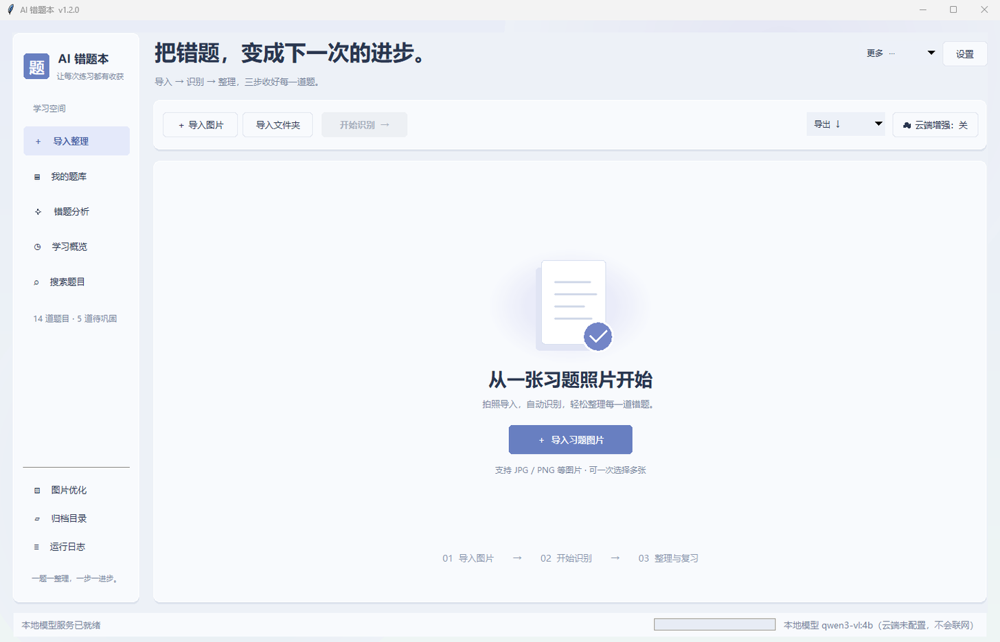
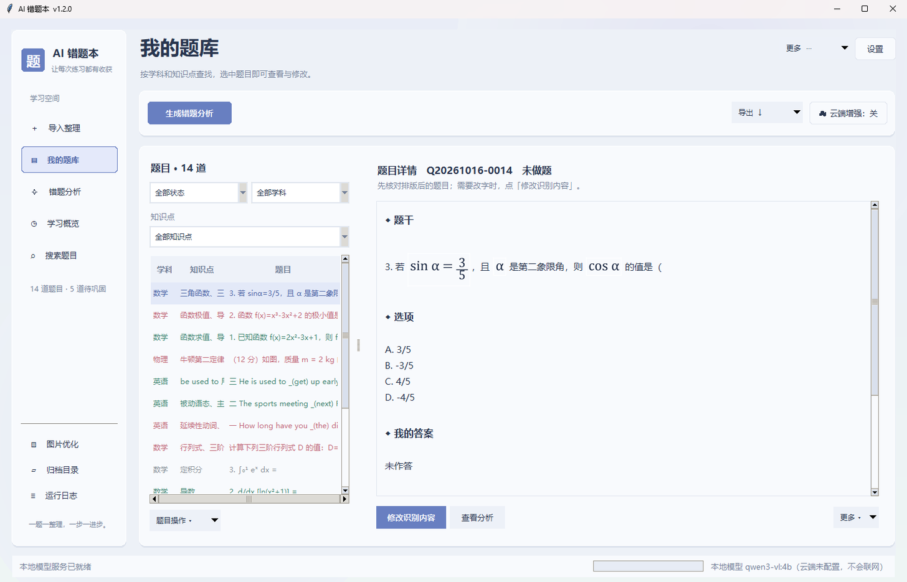
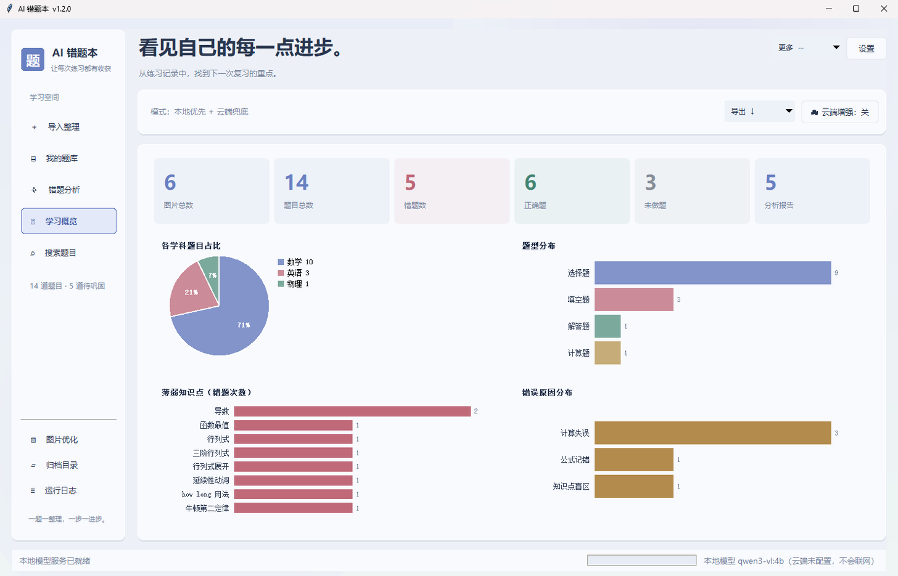
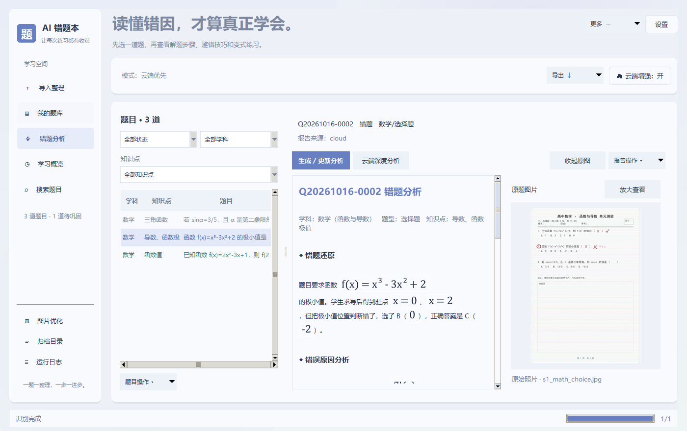
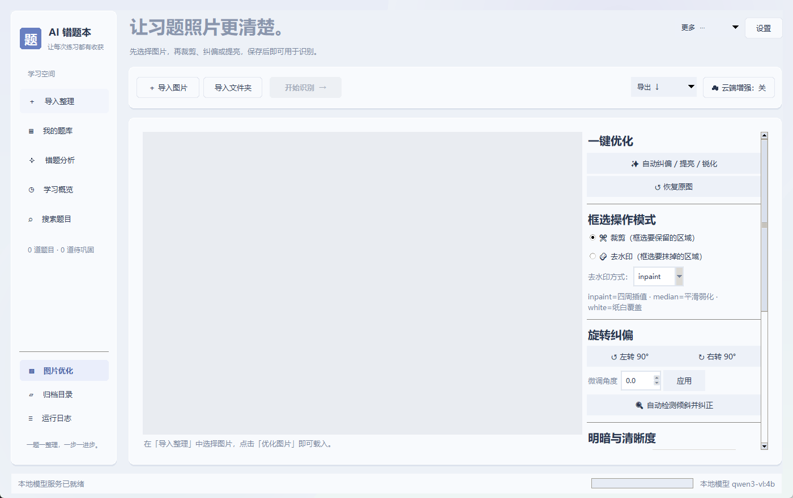

把手机拍的错题照片，自动变成可复习、可打印、能按知识点查找的错题本。
识别题干与手写作答 → 判定对错 → 自动分类归档 → 逐题生成错题分析 → 一键导出 Word / PDF。

错题本最麻烦的从来不是整理，而是「抄」——抄题干、抄自己的错答、抄解析。这个工具把这一步交给模型，你只负责拍照。
支持 JPG / PNG，可一次选多张。自动做倾斜纠偏、提亮、对比度拉伸，模糊和拍歪的照片也能识别。
读题干、读你的手写作答，判定「正确 / 错题 / 未做」，并自动归类学科、题型、知识点与年级。
按学科和知识点自动落到归档目录；逐题生成错因分析；统计薄弱点；一键导出 Word / PDF 打印。
下面全部是真实运行截图（示例数据），不是设计稿。




exercise-archive-portable-v1.2.0.zip（约 19 MB，带 portable 的那个）。
另一个 source 包是纯源码，需要目标电脑已装 Python。D:\AI错题本。
不要放 C:\Program Files 下——那里没有写权限，题库会存不下来。启动.bat。窗口出现即成功，此时先别急着识别。ollama pull qwen3-vl:4b（约 3 GB，需 4~6 GB 显存），完全离线。完整文档在仓库 docs/ 目录下。